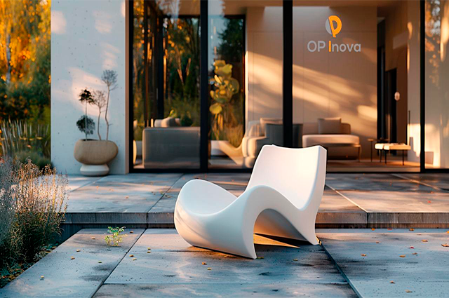
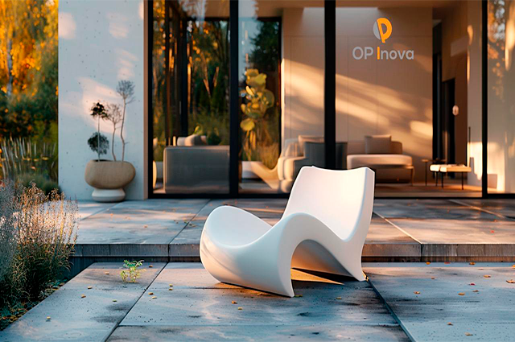

Lechler Tech
 

Lechler Tech: Inovação e Qualidade para Substratos Industriais
A linha Lechler Tech é especializada em fornecer soluções de alta performance para diversos substratos industriais, como PVC, metal, aço, alumínio e plástico. Trabalhando com cores pastéis e metálicas, a Lechler Tech oferece uma ampla gama de produtos desenvolvidos para atender às necessidades específicas da indústria moderna, garantindo durabilidade e excelente acabamento. Com uma abordagem focada em inovação, os produtos Lechler Tech se destacam não apenas pela qualidade das cores, mas também pela variedade de texturas. Seja para proteger ou embelezar superfícies industriais, a linha oferece soluções que aprimoram a resistência dos materiais, além de conferir acabamentos sofisticados e diferenciados, adequados a diferentes processos de fabricação e ambientes de uso. Cada produto é cuidadosamente desenvolvido para proporcionar uma excelente aderência e durabilidade, garantindo um acabamento de alta performance, seja em ambientes internos ou externos. As cores metálicas trazem brilho e modernidade, enquanto as cores pastéis oferecem suavidade e versatilidade para os mais variados projetos. A Lechler Tech é a escolha ideal para quem busca qualidade, resistência e estética em produtos que atendem as exigências da indústria, assegurando resultados de longo prazo com beleza e funcionalidade. A Lechler é uma empresa italiana fundada em 1858 em Estugarda, Alemanha, e se estabeleceu em Ponte Chiasso, Itália, em 1889. Tornou-se independente em 1910 e se consolidou no mercado de tintas, com destaque para inovações como o revestimento Lechleroid em 1938 e o Syntex em 1932. Ao longo das décadas, a Lechler expandiu-se para outros setores, como cosméticos, e começou a internacionalizar-se, abrindo filiais na França e Ibérica em 1998 e criando a Lechler Coatings Germany em 1999. Em 2001, a empresa se fundiu para formar a Lechler S.p.A. e inaugurou o Centre for Excellence. Um dos maiores destaques da Lechler está no desenvolvimento de tintas industriais de alta qualidade, projetadas para garantir acabamentos perfeitos, alta proteção e efeito estético desejado pelos clientes. Seus produtos são reconhecidos pela durabilidade e resistência, oferecendo soluções ideais para diferentes necessidades, incluindo revestimentos industriais, acabamentos automotivos e produtos de alta performance, que protegem contra as adversidades do tempo e do uso intenso. Em 2010, a Lechler celebrou 100 anos de história e, em 2013, adquiriu o controle do Grupo I.V.E., entrando no mercado brasileiro. A Lechler continua inovando, sempre oferecendo as melhores tintas para acabamentos industriais, com soluções personalizadas para cada cliente e com a excelência em qualidade e performance.